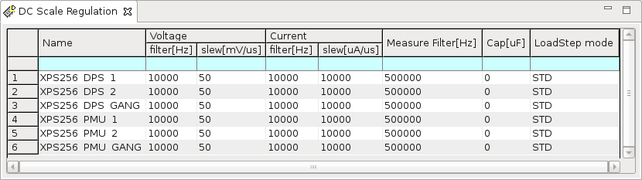

DC Scale Regulation editor
The DC Scale Regulation editor is used to set global defaults for regulation parameters.

The editor consists of the following cells:
| Name | A descriptive name for the DUT pin. |
| Voltage filter[Hz] | The voltage forcing / clamping bandwidth |
| Voltage slew[ms] | The slew rate for changes of the voltage force value |
| Current filter[Hz] | The current forcing / clamping bandwidth |
| Current slew[ms] | The slew rate for changes of the current force value |
| Cap[uF] | The load capacitance on the DUT board |
| LoadStep mode | The loadstep mode (STD or FAST) |
You can apply changes made in the DC Scale Regulation editor only in disconnected state.
Functional changes
- Introduced in SmarTest 7.10.1